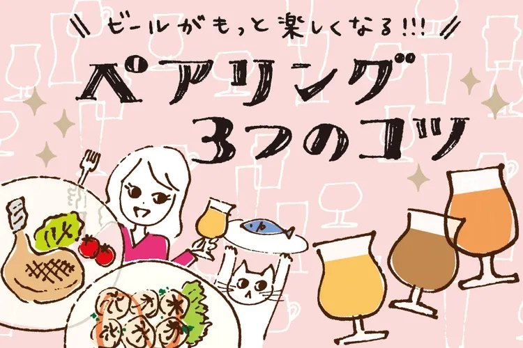
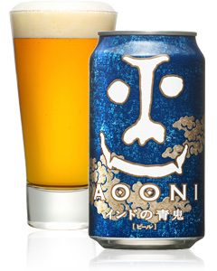
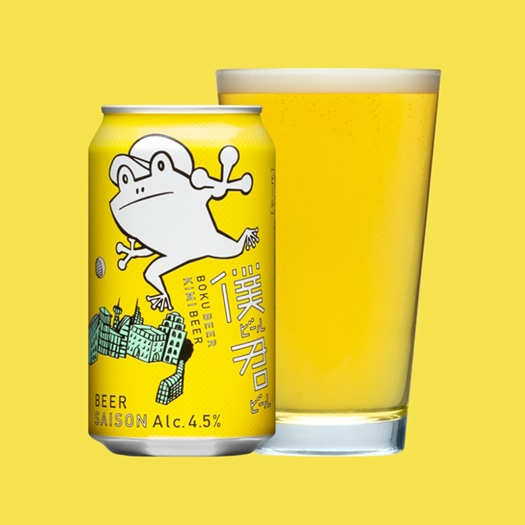
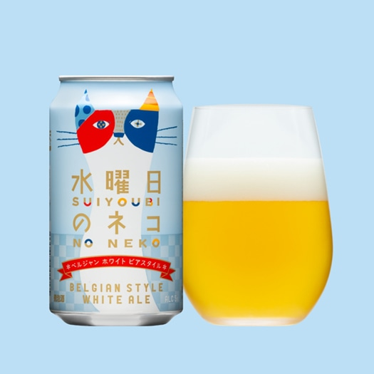
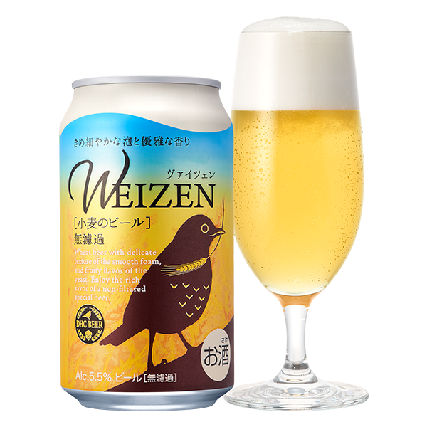

カレーとビールの世界へ、ようこそ。
複数のスパイスが混ざり合い、その刺激が愉しいカレー。
様々な素材の組み合わせ、数え切れないほどの味わいがあるカレーとビールは、多様性という点で共通するものがあります。
この特集では、さまざまな切り口でカレーとビールの美味しい世界を紹介します。
＼ 自家製クラフトビールと本格カレーを楽しもう！ ／
女性1人でもふらっと気軽に立ち寄れる
本格スパイスカレーとクラフトビールが楽しめるお店を紹介します。
＼ ビールとカレーの「ペアリング」って何？ ／
知ればもっとビールがおいしく、楽しくなる！カレーとビールの「ペアリング」について紹介します。
＼ カレーの味をリセットする？ ／
【IPA】
ホップのもつ香りや苦味が、一般的なビールと比べるとかなり強く、アルコール度数も5.5～7.5％と高め

【セゾンビール】
オレンジやレモンのような柑橘類を思わせる香りと、スパイシーな香りが一体となった複雑な香り
＼ カレーの味を引き立たせる？ ／
【ベルジャンホワイト】
ベルギーで古くから造られていた伝統的なビアスタイル。コリアンダーシードやオレンジピールを副原料として用いている為、フルーティな香りが特徴

【ヴァイツェン】
小麦麦芽を50％以上使用したエールビール。バナナやクローブを思わせる香りがあり、苦味をほとんど感じない
＼ カレーとおつまみで気ままな晩酌タイム♩ ／
お家で作れる簡単カレーおつまみを作ってみませんか？ビールが進むスパイシーな香りが漂うレシピを紹介します。
＃カレーとビールの世界
カレーとビールの美味しいエピソードについて、ぜひお気軽にご投稿ください！